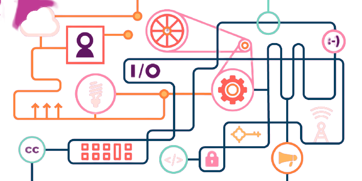

About Us

Hyde Technologies Ltd. is the pioneer of antivirus research and development in India and has set the benchmark of computer security standards.
Founded in 1995, it is one of the most trusted brands for IT Security.
Innovate to "simplify" securing digital experience.
Empowering the team to solve business problems.
To be trusted by our customers in securing the digital world and aim to grow as reputable global market leader.
We strive to solve complex problems with the simplest solutions by keeping in mind the unique needs of our customers. Hyde is a smart, easy to use and an extremely fuss-free product for your everyday protection against IT threats and viruses. That makes us one of the most trusted Antivirus brands in home users.
CORE PURPOSE
Innovate to "simplify" securing digital experience.
MISSION
Empowering the team to solve business problems.
VISION
To be trusted by our customers in securing the digital world and aim to grow as reputable global market leader.
WHAT MAKES US DIFFERENT
We strive to solve complex problems with the simplest solutions by keeping in mind the unique needs of our customers. Hyde is a smart, easy to use and an extremely fuss-free product for your everyday protection against IT threats and viruses. That makes us one of the most trusted Antivirus brands in home users.